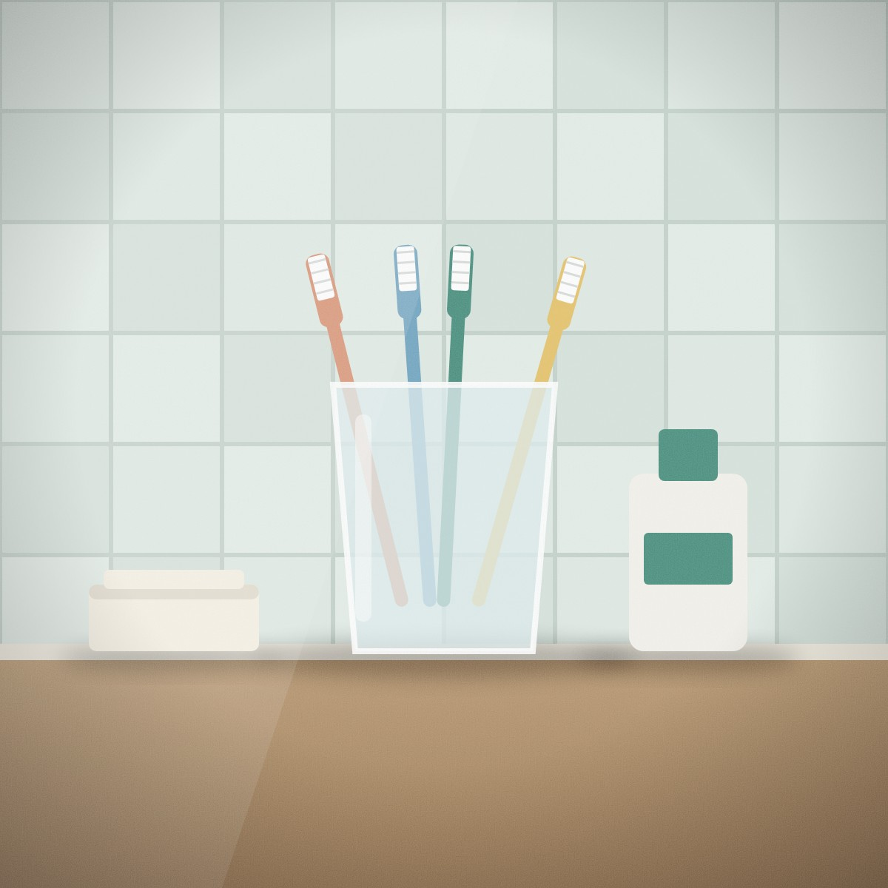
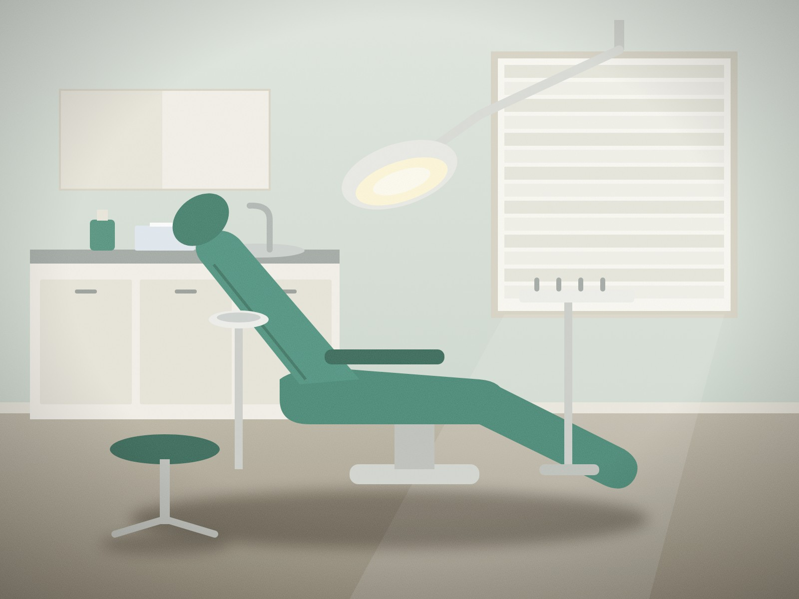

| Telephone 01632 960142 27 Marlow Road, Harrowmere HM3 2QT |
Opening Hours
| Monday 8.30am - 5.30pm |
| Tuesday 8.30am - 5.30pm |
| Wednesday 8.30am - 5.30pm |
| Thursday 8.30am - 7.30pm |
| Friday 8.30am - 4.00pm |
| Saturday 9.00am - 12.30pm (alternate weeks) |
| Sunday Closed |
Closed for lunch 1.00pm - 2.00pm
Emergencies
If you are a registered patient and need urgent help when the practice is closed, please ring 01632 960199.
Practice News
September
We are pleased to welcome Dr Priya Raman to the practice. Dr Raman is seeing patients on Mondays, Tuesdays and Thursdays.
June
Our new hygienist room on the ground floor is now open, so there are no stairs to climb for a scale and polish.

Our Treatments

All of the treatments below are carried out here at the practice. If you need something we do not provide, such as orthodontics or implants, we will refer you to a specialist we know and trust.
Check-ups
A routine examination takes about 20 minutes. We check your teeth, gums and the soft tissues of your mouth, and take x-rays every two years or so if they are needed. Most patients come every six months, but if your mouth is healthy we may suggest once a year.
Hygienist
Karen, our hygienist, is here on Tuesdays, Wednesdays and Fridays. A scale and polish removes the hard tartar that brushing cannot shift. She will also show you how to clean between your teeth properly, which is the part nearly everybody misses.
White fillings
We use tooth-coloured composite for most fillings. It bonds to the tooth, so we usually need to remove less of it than with a silver amalgam filling.
Crowns and bridges
A crown covers a tooth that is too broken down to fill. A bridge replaces a missing tooth by fixing to the teeth either side. Both take two visits about two weeks apart, and are made for us by a laboratory in Harrowmere.
Dentures
Full and partial dentures, in acrylic or with a slim metal frame. Allow four or five short visits. We also do repairs and relines, often the same day if you bring them in before 10 o'clock.
Root canal treatment
Used to save a tooth when the nerve has died or become infected. It has a bad reputation that it does not deserve - with modern anaesthetic it should feel no different to having a filling.
Tooth whitening
We provide home whitening. We take moulds, make thin trays that fit your teeth exactly, and give you the gel to use for about two weeks. We do not offer one-hour "laser" whitening as we do not believe the results last.
Extractions
We will always try to save a tooth first. When one does have to come out, we will talk to you about how to fill the gap, if it needs filling at all.
© 2008 Marlow Road Dental Practice, 27 Marlow Road, Harrowmere HM3 2QT. Tel: 01632 960142. Email: reception@marlowroaddental.example
This site is best viewed at 1024 x 768 in Internet Explorer 6 or above. You are visitor number 018,442